昨天收拾行李。弄到凌晨兩點還沒弄好...在床上翻來覆去，直到三點半還清醒著。 當我睡醒的時候已經是八點了！ 今天不是可以賴床的日子，趕緊起床，沖涼，收拾昨天洗的衣物。 我只帶了一個水壺，裝滿水是600CC，除了這個水壺之外，我沒有其他的水可以喝了。 出發時，還很擔心那兩隻老鼠-大馱＆亮亮，等我環島回來，不曉得牠們還活著嗎.. 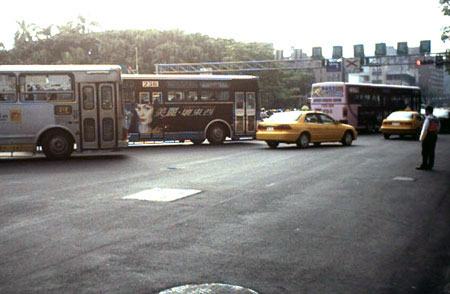 在從學校騎到新店，過了捷運站。往前直直走，就會接到北宜路。 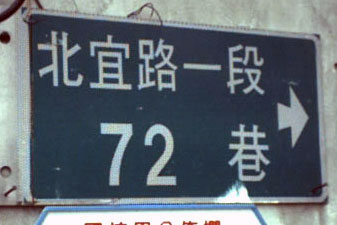 還不到9:00，我已經騎上了北宜公路，速度算還不錯。 路標說，距離坪林有26公里，小意思啦！ 簡單的來說：從一進入北宜，就是天殺的上坡-->上坡-->上坡。 北宜公路看起來就像下面這種感覺 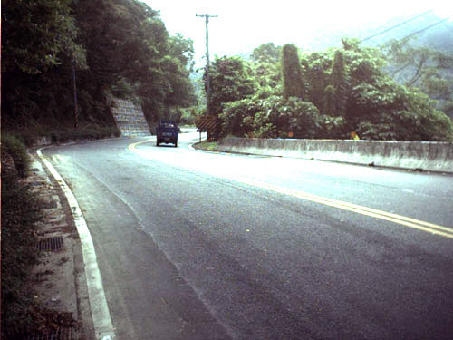 雙向單線道，車流量不很大，有少部份的砂石車跟遊覽車，一般是汽車居多。 當我還在北宜入口處跟上坡奮戰時，很不幸的微薄600CC的水已經全部喝完。 沒有人在顧廟。所以我就自己裝滿了茶，又繼續往前騎，我想我可能是水母之類的轉世。 好不容易看到有兩個工人，趕緊前去問他，能不能讓我裝一點水喝（哀求的表情） 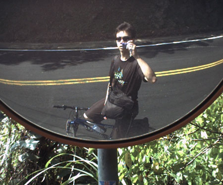 喝完熱茶之後，可以喝冰水，真是人間一大樂事。 爬到北宜的一個休息處，水又喝完了，看到前面有一家卡拉瓦里庭園咖啡廣場，還有賣點吃的.. 想說過去裝點水喝，順便看看有沒有好吃的東西。 不好意思給人家白裝水，所以我就買了兩顆茶葉蛋吃。 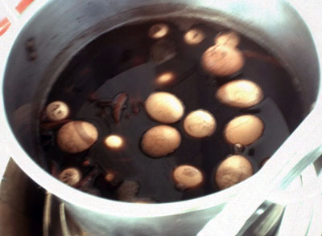 結果這一吃就不得了了...老闆娘請我吃了兩根香蕉（我長得像猴子嗎？） 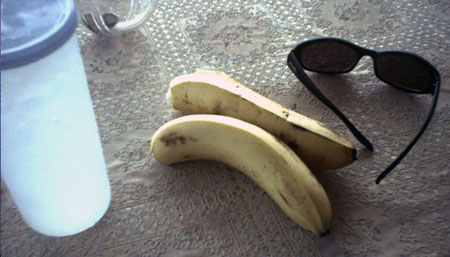 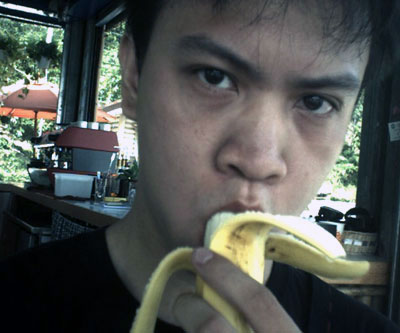 全部吃完之後，老闆娘又烤了一個披薩請我吃，然後還現打了兩杯的香蕉冰沙請我喝。 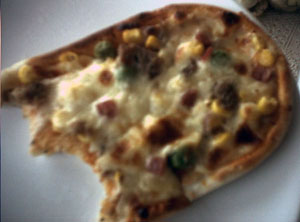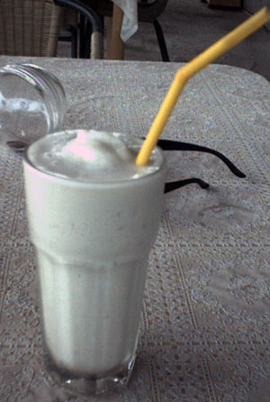 最後我要上路了，她又拿了四根香蕉給我，要我帶著路上吃 @@" 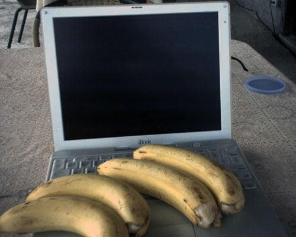 我在這邊要跟那個搶生意的流動咖啡店老闆講，你去別的地方開店啦∼不要在這裡搶生意。 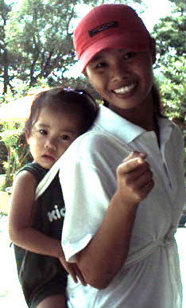 騎腳踏車有種無可取代的快感！ 一瞬間疲勞全部都消散了，又可以繼續踩下踏板往前走。 我怕被太陽烤焦，所以有塗防曬油，運動型的，流汗不會沖掉。 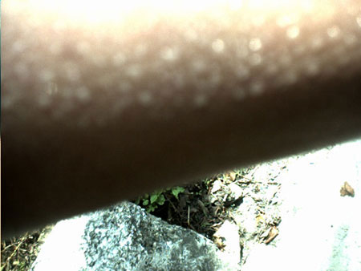 吃過免費的大餐，幸運之神也來了，從這邊之後，就是我剛剛說的，下坡-->坪林。 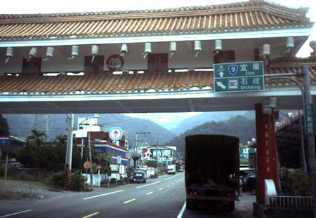 才一下子，坪林就到了，一般人都會在坪林休息，加油，尿尿，吃飯，然後再上路。 坪林到宜蘭這一段路線，是上坡-->下坡-->上坡-->下坡-->上坡-->上坡-->上坡 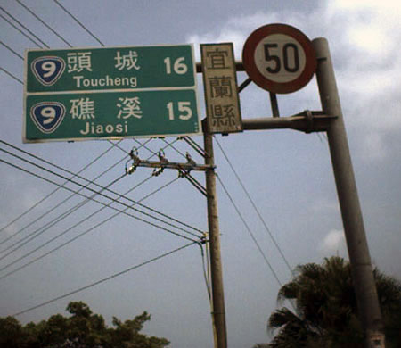 九彎十八拐是一個超級下坡，而且彎度還蠻大的，在下坡之前，有很多商家在這裡24小時營業。 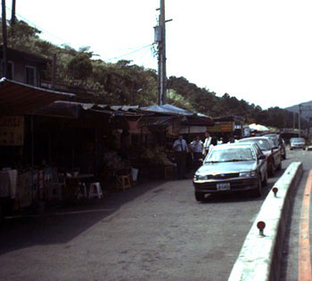 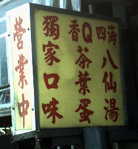 我在這邊跟好心的水果攤位，裝了開水（咖啡店的冰水喝完很久了，差點死在路上）。 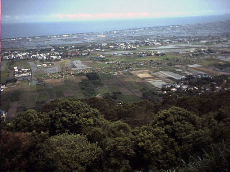 猜猜看台灣所有的縣市，就『交通方面，離台北最遠的是一個呢？』 答案是宜蘭，宜蘭沒有機場，要去宜蘭只有兩個方法，北宜公路或是濱海公路。
通車之後，台北到宜蘭只要20分鐘，現在如果開車從台北到宜蘭，走北宜公路， 囉唆完畢。因為下坡很開心∼沒什麼事做，所以一邊讓車子滑，我一邊拍了很多我騎車時的照片。 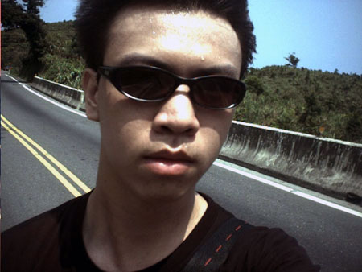 我把車子騎的比雲還高說 :P 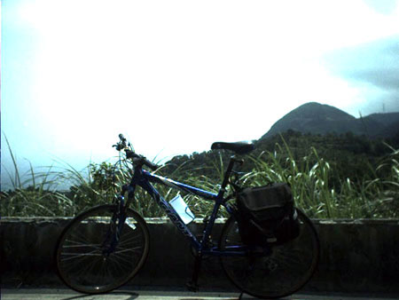 一路滑下北宜，看到路旁停滿了車子，大塞車，一時之間我還以為前面發生了什麼大車禍。 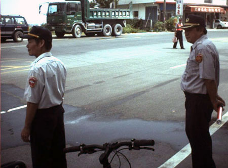 說是現在正在防空演習，兩點之前所有車輛不能移動。 這種事情..對於很少看電視的我，真有如晴天霹靂！我還以為是要接我去駕駛EVA， 警察伯伯跟我聊天，問我從哪邊騎過來的，是不是要去環島，要騎幾天..etc。 我下北宜的時候是下午1:30，從家裡出發是7:40，已經騎了六個小時了說！（當然有陸陸續續休息） 在那邊休息到兩點，終於又可以重新移動，接著就是蘭陽平原，會先經過礁溪，然後是宜蘭。 礁溪有個名產，是溫泉，不過現在是夏天，所以沒什麼人。人通通跑到蘇澳去洗冷泉了。 我有個表姊在礁溪開名產店，賣些蜜餞，鴨賞等宜蘭名產，攜帶的水又喝完了， 表姊開的店叫做『上雅』，她請我喝了冰礦泉水，還請我吃了蜜餞。 過了礁溪，就是宜蘭，在市區騎車，就不會有人跟你打招呼，大家都很忙。 有兩個騎腳踏車的摩門教徒（摩門教都騎腳踏車的），騎過來跟我哈拉。 在往前走就到了二結（位於宜蘭跟羅東的中間），這邊是小時候我長大的地方。 看時間是三點左右抵達的，所以我從下北宜到二結騎一個小時，不快不慢∼ 我已經有好幾次從新莊騎機車回宜蘭的經驗。 宜蘭的家人，對我騎機車回來，每次都很不高興，說這樣很危險。 今天所花費的費用：茶葉蛋 8元兩顆，一共16元。 有一點感想就是，『完全不累！』，我以為騎回來會累得要死說，但是就這樣到了。 洗過澡，睡了一覺，整理好今天的遊記，現在要下樓吃晚餐去啦，掰∼（揮揮手）！
|